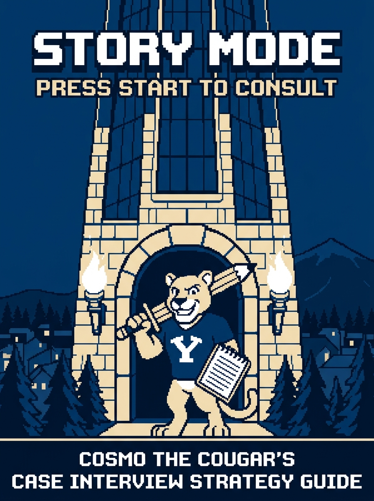
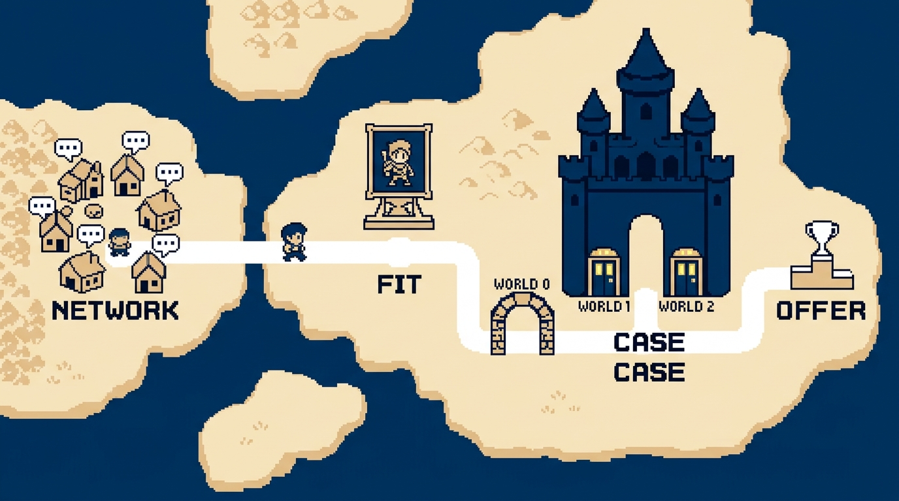
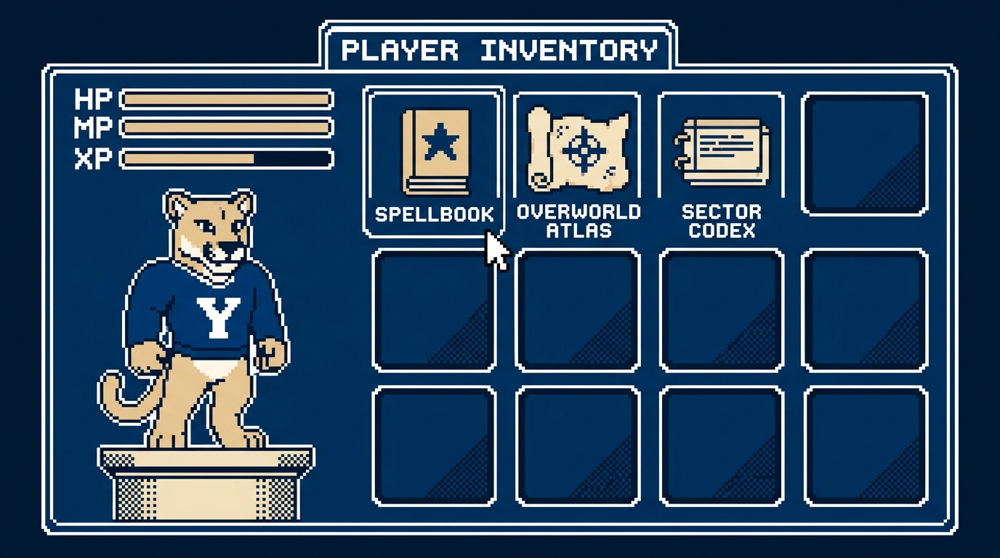
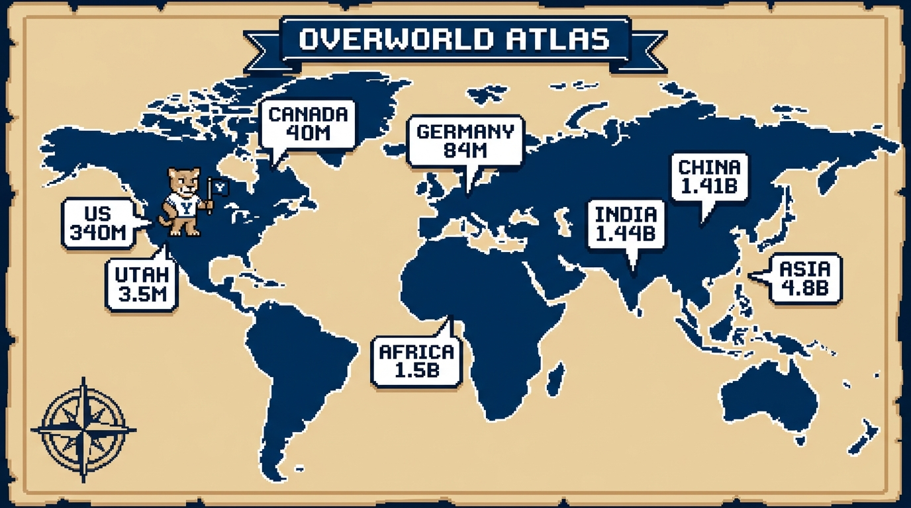
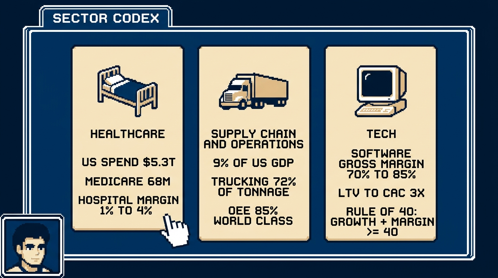
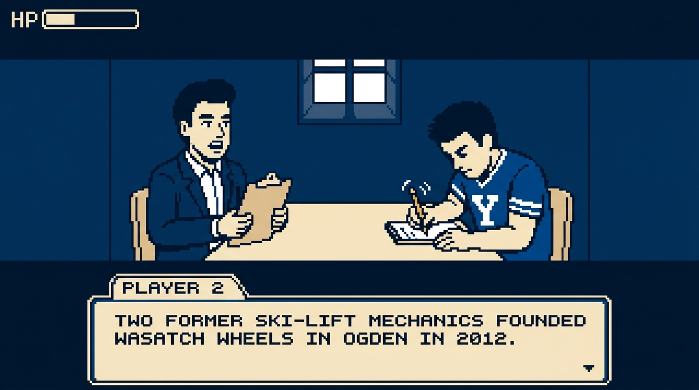
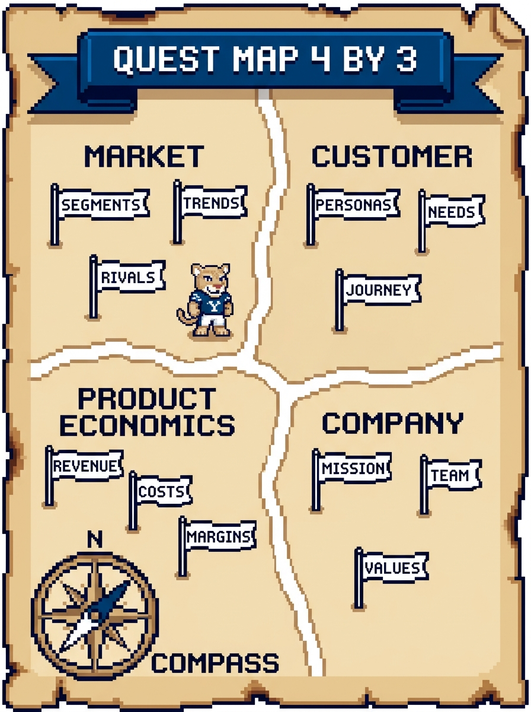
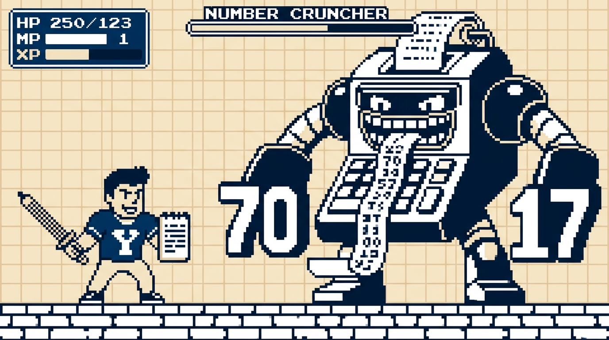
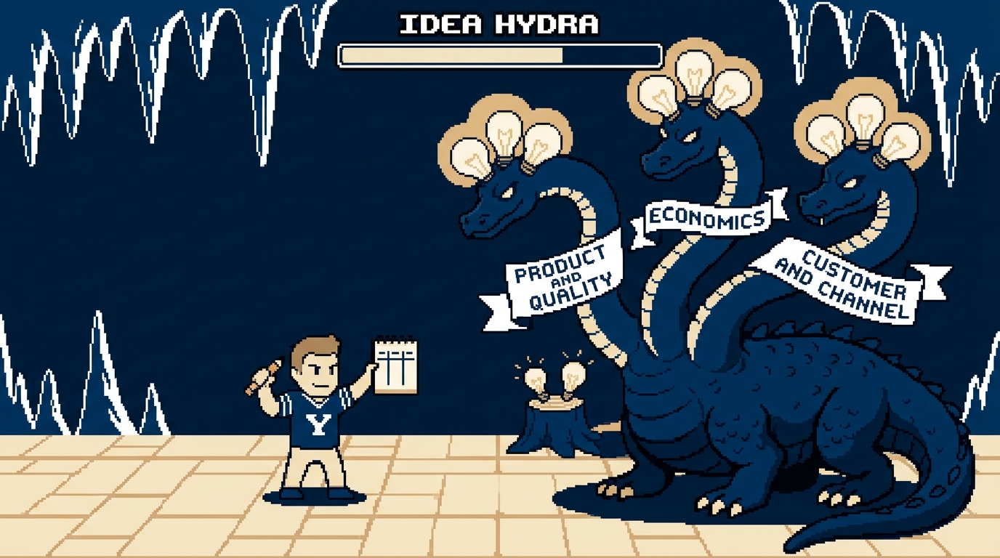
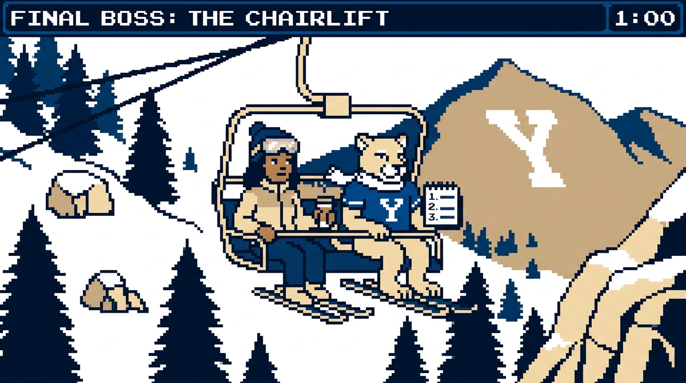

Book 2 · 10 pages
Story Mode
Press Start to Consult: the standard strategy guide.

#The Quest Line
You are Cosmo. The Boss Fight waits inside the Tanner Building, and the road to it runs through four stages: Network, Fit, Case, Offer. A former McKinsey engagement manager told the room that nobody grew up planning to be a consultant, so the field starts from zero.
Network is the Overworld. You travel, you meet NPCs at firm events and coffee chats, and the right conversation puts you in the interview chair. Then the firm walls the Overworld off: your resume and your handshake with a partner got you in, and they do not score the fight. Referral weight swings by firm. Some accept a partner's word, some prohibit it, and at some firms a note from a BYU MBA two years into the job carries weight.
Fit is Character Select: your backstory and your leadership stories from missions, projects, and jobs. Strong candidates have lost offers by grinding the case and skipping this screen, so rehearse your stories out loud the way you rehearse a sizing.
Case is the Boss Fight, the multi-phase encounter Player 2 scores.
Offer is the Victory Screen.
#The three worlds
World 0 is the gate. A recruiter screens you by phone. Speak in full sentences, laugh at the jokes, and expect a simple mini case if the caller comes from the business side. Many firms add a digital, gamified, or AI assessment here. As of 2026 it sits before the chair, and the firm uses your score to decide who gets one. Some firms now count that score inside the main process.
World 1 is first round: two 30-minute video cases with senior associates or managers two to four years past business school.
World 2 is the final: two or three 45-minute in-person cases with junior partners and partners four to twenty years in. A case alone runs about 30 minutes. With behavioral questions attached, plan on 45 to 60. One former McKinsey engagement manager ran ten minutes of chit-chat and 50 minutes of fit plus case.
#Five boss forms
The mini case runs 15 to 20 minutes, often as a sizing question, in corporate roles and screening calls. The one-on-one full case runs 25 to 45 minutes. The digital, gamified, or AI assessment sits at World 0. In the presentation interview, an EY and PwC favorite, the firm hands you a blank six-to-eight-slide deck and a ten-tab spreadsheet, leaves you alone in a room for three hours, then seats you before a panel. The group interview is rare for MBAs, and firms use it more for PhD candidates.
#The scorecard
Firms want three things from the fight: structure, problem solving, communication. Player 2 weighs three questions while you talk: whether your math and structure hold up, whether you take initiative the way an analyst does, and whether the team would enjoy working with you and managing you. Initiative looks like asking for the revenue data because you want to crack the problem, and saying why. Answer the third question well and a manager can send you alone to Omaha to sit with the cranky client.
Player 2 scores in a handful of big buckets, broad and qualitative. Weak math and weak structure show up anyway. Firms hire future partners, so Player 2 does not fail you for a slip on step 17 of a segmentation. One coach put it this way: above the bar beats the badge on your resume.
#Co-op mode
Player 2 plays co-op. The coaches framed the interviewer as your partner in solving the case, and Player 2 scores collaboration. You narrate your thinking, and you check your equation with Player 2 before you compute, because work you do not say out loud earns no points. Narrate a wrong turn the same way: say the number looks high, say why, fix it, and move on, because Player 2 counts the catch in your favor.
#Beyond consulting
Casing has spread past the consulting firms into corporate strategy, general management, marketing, and finance roles. Capital One puts candidates through multiple mini and full cases. Bank of America runs mini cases. Delta and Walmart, recruiting on campus, told BYU that the MBA recruits needed stronger casing. Disney's corporate strategy group cases its candidates. Economic consulting firms load their cases with heavier math, because much of their work is litigation support: damages, antitrust, and securities cases.
Topics are random by design. A former McKinsey engagement manager put about a quarter of his firm's cases outside business, a police department that cannot recruit officers among them. The skill under test is breaking any situation into pieces you can solve.

#Player Inventory
Three items sit in the bag: the Spellbook for mental math (your MP), the Overworld Atlas for populations, and the Sector Codex for industry baselines.

#Spellbook
Case math is sixth-grade arithmetic plus single-variable algebra and fractions. The six spells are add, subtract, multiply, divide, big numbers, and percents.
Cast by three rules. Write the equation before you touch a number and get Player 2's nod. Round to friendly numbers and say so. Solve one step at a time, narrating, and sense-check each result before you move on. On calculators, most firms say no, BCG puts your hands and paper on camera during video rounds, and Capital One allows them.
Memorize the Fraction Scroll so that you read 130 times 33% as one third of 130 and say about 43.
The Fraction Scroll
| Fraction | Percent |
|---|---|
| 1/2 | 50% |
| 1/3 | 33.3% |
| 1/4 | 25% |
| 1/5 | 20% |
| 1/6 | 16.7% |
| 1/7 | 14.3% |
| 1/8 | 12.5% |
| 1/9 | 11.1% |
| 1/10 | 10% |
| 1/11 | 9.1% |
| 1/12 | 8.3% |
| 1/15 | 6.7% |
| 1/20 | 5% |
| 1/25 | 4% |
| 1/30 | 3.3% |
| 1/40 | 2.5% |
| 1/50 | 2% |
| 1/80 | 1.25% |
| 1/100 | 1% |
The 1/80 trick. Assume an 80-year lifespan with the same number of people at each age. Each year of age is then 1/80 of the population, or 1.25%. People 65 and over span 15 years, so 15 times 1.25% is about 19%, and K-12 students span 13 grades, so 13 times 1.25% is about 16%. In the US that is 4.2M people per year of age. The trick runs about 10% above the atlas rows of 60M seniors and 50M students, so open with the trick and close with the atlas figure.

#Overworld Atlas
The workshop set a need-to-know list: the US population, the city you live in, the city you are interviewing in, two countries or a continent, and, for a sector-focused firm, its headline figures. If a country is missing from your atlas, ask, and Player 2 will hand you the number.
World and US
| Figure | Value |
|---|---|
| World population | 8.2B |
| World GDP | $120T |
| US population | 340M |
| US households | 130M |
| US average household size | 2.5 |
| US adults 18+ | 260M |
| US 65+ | 60M |
| US K-12 students | 50M |
| US GDP | $30T |
Household size sits at 2.5 for the country and runs larger in family-heavy regions like Utah. A former McKinsey engagement manager put Manhattan near 1.5. Carry the range as your rule: US household size runs between 1.5 and 4 depending on the place, so name the figure you picked and the reason you picked it.
Divide 340M by 2.5 and you land on 136M, above the atlas row. Take out the 8M Americans in group quarters such as dorms and care homes and you get 133M, and 2.5 is a rounded figure, so use the 130M row and move on.
Utah block
| Figure | Value |
|---|---|
| Utah population | 3.5M |
| Utah households | 1.2M |
| Utah average household size | 3.0 |
| Wasatch Front population | 2.7M |
| Salt Lake County | 1.2M |
| Utah County | 720K |
| Salt Lake City metro | 1.3M |
| Salt Lake City (city proper) | 210K |
| Provo-Orem metro | 780K |
| Provo (city proper) | 115K |
| BYU total enrollment | 34K |
Twelve metros: the ten biggest, plus Phoenix and Denver for the Mountain West
| Metro | Population |
|---|---|
| New York metro | 20M |
| Los Angeles metro | 13M |
| Chicago metro | 9.5M |
| Dallas-Fort Worth metro | 8M |
| Houston metro | 7.5M |
| San Francisco Bay Area | 7.5M |
| Washington DC metro | 6.3M |
| Atlanta metro | 6.3M |
| Miami metro | 6.2M |
| Philadelphia metro | 6.2M |
| Phoenix metro | 5M |
| Denver metro | 3M |
Twelve countries
| Country | Population |
|---|---|
| India | 1.44B |
| China | 1.41B |
| United States | 340M |
| Indonesia | 280M |
| Brazil | 215M |
| Mexico | 130M |
| Japan | 124M |
| Germany | 84M |
| United Kingdom | 68M |
| France | 68M |
| Canada | 40M |
| Australia | 28M |
Regions
| Region | Population |
|---|---|
| Asia | 4.8B |
| Africa | 1.5B |
| Europe | 745M |
| European Union | 450M |
| North America (US, Canada, Mexico) | 510M |

#Sector Codex
A healthcare firm expects you to carry Medicare enrollment the way a generalist carries the US population. Drop one of these into your structure and Player 2 stops explaining the sector to you.
Healthcare
| Metric | Value |
|---|---|
| US healthcare spending | $5.3T |
| Healthcare share of US GDP | 18% |
| US healthcare spending per person | $15.5K |
| Hospital care share of US health spending | 30% |
| US hospitals | 6,100 |
| US hospital beds | 920K |
| Typical hospital operating margin | 1% to 4% |
| Average hospital length of stay | 4.5 days |
| Medicare enrollees | 68M |
| Medicaid and CHIP enrollees | 72M |
| Employer-sponsored insurance covered lives | 155M |
| Uninsured share of US population | 8% |
Supply Chain and Operations
| Metric | Value |
|---|---|
| US logistics cost share of GDP | 9% |
| US logistics spend | $2.5T |
| Trucking share of US freight tonnage | 72% |
| Full truckload capacity (weight) | 45,000 lb |
| Full truckload capacity (pallets) | 26 pallets |
| Truckload all-in rate per mile | $2.50 |
| Ocean transit Shanghai to Los Angeles | 14 to 21 days |
| Last-mile share of total delivery cost | 40% to 50% |
| Inventory carrying cost per year (share of inventory value) | 20% to 30% |
| Inventory turns: grocery | 12 to 15 |
| Inventory turns: general merchandise retail | 4 to 8 |
| Fill rate target | 95% to 98% |
| OEE world class | 85% |
Tech
| Metric | Value |
|---|---|
| Software gross margin | 70% to 85% |
| Hardware or marketplace gross margin | 40% to 60% |
| LTV to CAC benchmark | 3x |
| CAC payback benchmark | under 18 months |
| Net revenue retention (good) | 100% to 120% |
| Annual gross churn: healthy SaaS | 5% to 10% |
| Rule of 40 | growth % + profit margin % >= 40 |
| Magic number benchmark | 0.75+ |
| Burn multiple (good) | under 1.5 |
| Marketplace take rate | 10% to 30% |
| US e-commerce share of retail | 16% |
#The Tutorial

The first eight to ten minutes of the Boss Fight follow a script: Player 2 reads the prompt, you play it back, you ask a few questions, you ask for time, and you present a structure. That script holds across firms, so train it until it lives in muscle memory and your HP stays full for the middle, which changes with each case.
#The Opening Cutscene
Player 2 reads two or three paragraphs, once. Write as you listen, in shorthand, and leave a wide right margin for the numbers you will confirm.
Then hit the Save Point. Play the prompt back out loud in your own words, in about a minute. Group the facts as you go, by segment and by number, so you have sorted the case before you touch a framework.
Over video, confirm each number one at a time: seventy and seventeen sound alike on a laggy call. Say the number, pause, and let Player 2 nod: that nod is your first save.
Two former ski-lift mechanics founded Wasatch Wheels in Ogden in 2012. The company employs about 900 people and sells three lines, commuter, recreation, and cargo, priced from $1,500 to $4,000.
#The Dialogue Tree
Three to five questions is the norm, in two to three minutes. You may ask none, but confirming a figure costs ten seconds and buys insurance. Player 2 dodges the novice branches: questions before the recap, "are there other objectives?", and data requests with no reason attached. Player 2 answers the advanced branches:
- Confirm the business model and scope. "Do the 1,200 dealers carry rival brands, or Wasatch alone?"
- Clarify the target metric. "Is there a revenue target or a timeline the client has in mind?"
- Ask for anything you missed. A number you did not catch is worth more than a clever question.
Phrase the question as a hypothesis and Player 2 hears a candidate with a Compass: "My hypothesis is that the 1,200 dealers carry rival brands alongside ours. Is that right?" Attach the reason to any data request. "I would like margin by line so I can see which line should lead the plan" beats "Can I see margins?" and Player 2 hears hunger to solve the case.
Player 2 is there to clarify the business and the objective. A question that is analysis in disguise gets "we do not have that, but build it into your framework." A dodge means the question was good. Do not say "that must have been a dumb question." You will feel that line rising under pressure, and swallowing it is the easiest Game Over screen to skip.
Be brave about unfamiliar industries. If the case is about cargo insurance in Singapore, say so and ask how the money moves. One coach said he prefers to spend a minute explaining an industry over hiring an associate who nods along in the team room and learns nothing.
A short exchange after the prompt:
COSMO
Let me play that back. Wasatch Wheels, Ogden e-bikes, number two in North America by units. $600M revenue, 400K units a year, 25 countries with 70% of revenue from the US. Three lines, sold through 1,200 dealers plus the website. Dana Okafor wants a growth strategy. Did I hear 25 countries and 70%?
PLAYER 2
You did.
COSMO
Two questions before I build. Does the client have a revenue target or a timeline in mind?
PLAYER 2
No target. She wants to see where the growth is and what you recommend.
COSMO
My hypothesis is that cargo earns the highest margin, since its price premium runs ahead of its build cost. Could you share margin by line, so I can weight my structure toward the line that earns the most?
PLAYER 2
We do not have that today. Build it into your structure and we may get there.
COSMO
Understood. I would like two minutes to organize my thoughts, then I will walk you through my approach.
PLAYER 2
Go ahead.
Cosmo writes for two minutes
Player 2 dodged the second question, since margin by line is analysis you will do in Boss Fight I, and Cosmo moved on without an apology.
#The Pause Menu
Ask for the Pause each time, phrased as a plan the way Cosmo did above. Trained interviewers expect the request and say yes. One coach said he has watched hundreds of heads bent over paper and remembers none of them, so the silence costs you nothing.
Use the two minutes on paper, in this order:
- One line at the top: the objective and the metric (revenue growth for Wasatch Wheels, and the client set no target).
- Four region names across the page, the first four that come, in shorthand.
- Three quests under each region, as fragments with a number in them: "TAM + growth by country, by line."
- Ten seconds to renumber the regions by priority and mark where you would start.
Successful McKinsey candidates in one coach's data averaged about 2:30 head-down and 2:15 to 3:00 presenting, and Bain runs snappier. Write fragments on the page, since you will speak the sentences.
#The Quest Map
A region is a workstream you would hand to a teammate on day one of a 4 to 12 week project. Miss a region now and the team discovers two weeks in that it needs a two-and-a-half-week consumer survey. In the interview you compress that plan into a 4 by 3 grid: four regions, three quests each.
Regions must be MECE: no overlapping regions, no unexplored map. If a quest could sit in two regions, pick one and move on. Framework building is an art, and Player 2 grades how easy your logic is to follow.
Each quest gets a number and a "so that." "Look at customers" is a wish. "Share of buyers in each rider segment and how it is shifting, so that we know which rider to build for" is a quest a teammate can run. The "so that" is the Loot you promise in advance. Player 2 marks a bare profit tree correct and forgets it, since a 12-year-old can recite "profit equals revenue minus cost." Keep the split and add what you suspect: "I suspect recreation is losing riders to cheaper rivals while cargo grows, so I want units and margin by line and dealer discounting on trail bikes."
Your Compass. A hypothesis at this stage is your best early guess at the answer, drawn from the prompt and the objective before you run a number. Wasatch Wheels wants growth, the US books 70% of revenue, and 25 countries split the rest, so start the guess there: growth sits abroad and in the commuter line. That guess sets region one. Spend the ten-second renumber moving the region that tests your Compass to the top of the page, and say why it goes there. State the Compass in one sentence after your last quest, and Player 2 gains a claim to steer you with and a reason to hand you data. Hold it as a guess. If the first analysis kills it, say so out loud, turn the Compass, and name the region you move to instead. Player 2 scores a hypothesis you stated and dropped with a reason above a case you ran with no compass at all.

The sample map for Wasatch Wheels growth, in priority order:
| Region | Quest 1 | Quest 2 | Quest 3 |
|---|---|---|---|
| 1. Market | TAM and growth by country and by line, so that we chase the biggest pools | Share concentration in the top five markets, so that we know where share is winnable | Speed rules, subsidies, and tariffs by country, so that we skip closed doors |
| 2. Customer | Penetration by rider segment (commuter, family hauler, trail) against potential, so that we find the biggest unmet demand | Willingness to pay versus the top two rivals, so that we know if price has headroom | Conversion by feature (range, battery, financing), so that we build what sells |
| 3. Product economics | Contribution margin by line, so that growth adds profit as well as units | Margin by channel, dealer versus website, so that we know whether direct sales fund growth or cannibalize dealers | ROI by initiative (new country, new line, direct channel), so that we rank them |
| 4. Company | Units per dealer across 1,200 dealers, so that we know if the channel can carry more | Assembly capacity against 400K units, so that we can ship what we sell | Free cash flow and payback, so that we fund the plan we pick |
Your Compass: growth comes from the commuter line in countries where e-bikes are common. Start in Market, quest 1.
Deliver the map in about three minutes. Say the headline first: "I see four areas, and I would start with the market." Name the regions in priority order, give one sentence per quest with the number and the "so that," and close with where you would start and the reason. If you run past three minutes, you are repeating a quest or reading the page aloud without priorities. One coach admitted a four-minute candidate once got the job, then told the room to train for three.
#Boss Encounters
Between the Quest Map and the close, Player 2 throws quant and creative questions at you in any order. You beat each with the same habit: structure first, talk through the work, end with the Loot.
#Boss Fight I: The Number Cruncher

The Number Cruncher has three forms. In verbal form, Player 2 reads you a paragraph of numbers. In chart form, you get a table such as a P&L. In graph form, you get a bar or line chart, and you read the title, axes, and units before a single bar. Your process stays the same.
- Recap. Say what you are solving for, then read the data back by segment. Confirm each figure.
- Structure. Lay out the equation in words before you touch a digit. Ask for missing inputs and say why you want them. Then stop and get the nod from Player 2, so you catch a missing step before you burn three minutes on the wrong equation.
- Solve. Work each line out loud, round to friendly numbers, and sense-check as you go.
- Loot. Give the three-part answer: the number, what it means for the client, and what comes next.
Plan on two minutes to structure and three to share. Player 2 often stops you after the setup, since full arithmetic takes three to four times as long. Math is the one part of the case with a single right answer, so a slip shows. Catch it and fix it out loud, without an apology spiral.
Reading an exhibit. Player 2 slides a table across the desk.
Wasatch Wheels revenue by product line, in $M
| Product line | Last year | This year |
|---|---|---|
| Commuter | 300 | 330 |
| Recreation | 200 | 180 |
| Cargo | 100 | 150 |
Read it in this order before you speak: title, axes, units, period, the biggest bar, the trend, the outlier, the so what. Then work it out loud. Totals first: $600M to $660M, +10% overall. Growth by line next: Commuter +10%, Recreation -10%, Cargo +50%. Mix last: Cargo mix rose from 16.7% to 22.7%, and you read 16.7% off the Fraction Scroll, since 100 of 600 is one sixth. Recreation is the outlier, since it is the one line that shrank.
The Loot: growth comes from cargo while recreation shrinks, and margin by line is the next question before money follows cargo.
The Sizing Dungeon. A market sizing question has five floors: the base (population, households, or businesses), three or four segments, the share who own or buy, purchase frequency (below one per year for a durable good), and average price. Market size means revenue dollars per year unless Player 2 says otherwise. Then add a 10% to 20% true-up for buyers your model skipped.
Player 2 asks how many e-bikes sell in Utah each year, in units and dollars.
| Floor | Assumption | Calculation |
|---|---|---|
| Base | Utah population 3.5M, household size 3.0 | 1.2M households |
| Segments | Wasatch Front 75%, rural Utah 25% | 900K and 300K households |
| Ownership | 8% of Wasatch Front homes, 4% of rural homes | 72K plus 12K = 84K e-bikes |
| Frequency | One purchase per 6 years | 84K divided by 6 = 14K units per year |
| True-up | Fleets and rentals add 20% | 14K times 1.2 = 16.8K units per year |
| Price | Average $2,000 | 16.8K times $2,000 = $33.6M per year |
Game Over: you announce 84K as the answer. That figure is the installed base, a stock, and Player 2 asked for sales per year, a flow. Continue? Divide by the replacement cycle.
Sense-check before you announce: Utah holds about 1% of the US population, so scale 16.8K units to a US market near 1.7M a year. The client sells 400K units and books 70% of revenue at home, so about 280K US units, a sixth of that market and a believable share. Then give the three-part answer. The number: about 16.8K units and $33.6M a year. The Loot: Wasatch Wheels books $600M in revenue, so the whole Utah market is under 6% of the company even at 100% share, and growth has to run through bigger markets. Next: pull dealer sell-through, the units dealers sold to riders, for the client's Utah share, then size California and Texas.
If Player 2 asks why 8%, say Wasatch Front households skew toward commuters and trail riders who can afford a $2,000 bike. Trophy unlocked: Reasonable Numbers.
#Boss Fight II: The Idea Hydra

The Idea Hydra is the creative question. Cut one head and two more appear, so you win by sorting the heads onto three necks. The fight is a miniature Quest Map on a narrower question and takes three to four minutes.
- Recap and confirm the question, 30 seconds.
- Ask for 30 to 60 seconds of prep. Player 2 expects the ask. Use the silence to pick three categories.
- Fill each category with two to four points.
- Close with where you would start and what else you would add, 30 seconds.
The Wasatch Wheels version: a national big-box retailer has launched a private-label e-bike at 40% below the client's average price, and dealers want price support. Player 2 asks what you would investigate about the retailer's move before deciding how to respond.
Neck one, product and quality: specs, battery, warranty, and who builds it, since a knockoff with no service network earns one sale per customer. Neck two, economics: whether the retailer sells at a loss to pull store traffic, how long it can hold that price, and who supplies it. Neck three, customer and channel: which segment is switching, how much brand matters here, and what your 1,200 dealers see on the floor.
Start with a mystery shop of the product and a pull of dealer sell-through data for the last 90 days. Then name two responses to test before you touch price: a dealer-exclusive model and a financing offer.
#Final Boss: The Chairlift

The wrap-up prompt is corny and unmistakable: Player 2 has dinner with the CEO tonight, or in this case shares her chairlift. Ask for 30 seconds to organize your notes. A trained interviewer grants it.
You take three steps on the ride: recap the problem and what you did, recommend, and give next steps, meaning three areas to push deeper or wider. Answer a binary question, such as whether to match the private-label price, with the binary answer first, then next steps. Answer an open question, such as how to grow, with the recommendation first. Either way, name the number you trust least and say how you would firm it up, such as a consumer survey on price sensitivity before you raise prices. Draw the recommendation from the whole case.
PLAYER 2
Dana Okafor is riding the chairlift with me this afternoon. One ride, about a minute. She wants to know what we recommend on growth. Tell me what I should say to her.
COSMO
Could I take 30 seconds to organize my notes before I answer?
Cosmo writes for 30 seconds
COSMO
Tell her this. She brought us in to build a growth plan for a $600M brand. We sized her home market, read the product lines, and worked the private-label threat. I opened expecting the commuter line abroad to lead, and I turned once I read the line results. Three things. First, the recommendation: grow outside Utah and behind cargo. Utah takes about 16.8K e-bikes a year across all brands, $33.6M, so the home state cannot carry the plan, and cargo grew 50% this year while recreation fell 10%. Hold off on a price war with the private label until dealer sell-through is in. Second, the number I trust least is the 8% of Wasatch Front households I assumed own an e-bike. Take it to 4% and Utah drops to about 9.6K units and $19.2M, so I would firm it up with a consumer survey. Third, next steps: margin by line before we fund cargo, the dealer sell-through pull, and California and Texas sized the way we sized Utah.
Player 2 will push on one point. Hold or move, with a reason either way. Trophy unlocked: Answer First.
#Training Grounds
Casing is a decathlon: you train the weak events and let the strong ones coast. Rate yourself by section after each live case and spend the week on the lowest score.
The only XP that counts comes from out-loud reps with a partner. Math in silence is easy. Math with a person watching and taking notes is a different skill, and it is the one on the scoresheet. An MBA second-year with 20 to 30 cases behind them, given and taken, will tell you where you come off flat. AI casing works for drills, structure, and concept review. Its feedback runs positive, because the model praises whatever you did, and that is dangerous in the week before World 1.
Foundations. Watch and work through five full live cases. Learn the business basics you skipped (a P&L, fixed versus variable cost) and skim industry primers so a hospital or trucking case does not start from zero.
Intensify. Master the core frameworks and start blending them, since few prompts fit one tree. Complete ten out-loud cases with a partner or coach. Practice your Character Select story until you can tell it in two minutes without notes.
Adaptability. Get your mental math fast and accurate, get comfortable reading charts under a clock, and sharpen the hydra. Take cases in different styles. A Bain case runs snappier than a McKinsey case, and a Capital One mini case is its own creature.
The BYU MBA Strategy and Consulting Association runs case practice on Tuesdays at 5 pm. Show up, take a case, give a case. Trophies like the two above mark the habits worth repeating, one unlock per habit, and New Game+ carries the full set of fifteen. You earn the XP for the Dungeon in that room.